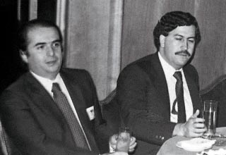
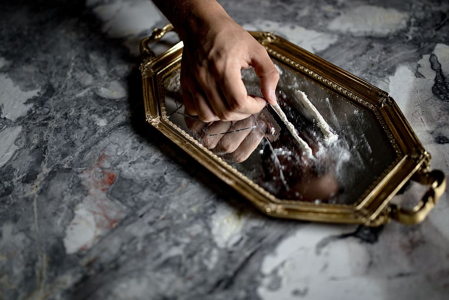
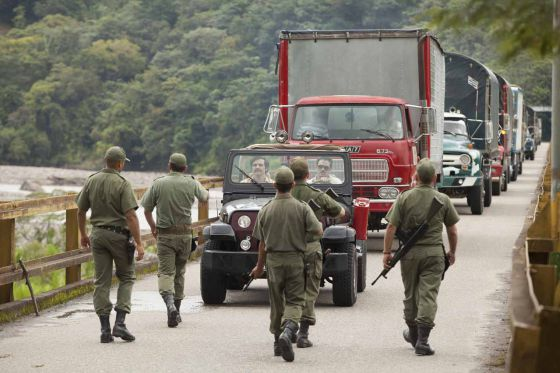
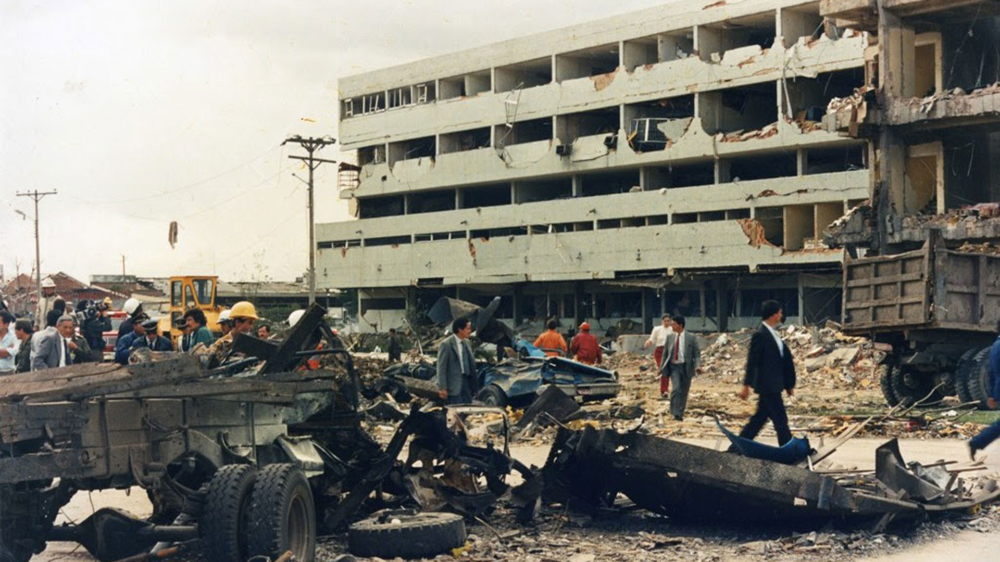

NARCOTRAFICO
| NOMBRE | DESCRIPCIÓN | IMAGEN |
|---|
| Corrupción |
El dinero es más que capital económico. Es también capital político y social. Las ganancias de estas redes de transporte ingresan a empresas legítimas e ilegítimas, las cuales proveen miles de puestos de trabajo y son un motor clave de la economía en muchas áreas. Los transportistas financian partidos políticos y candidatos, lo que les da voz y voto en materia de seguridad, así como estrategias de desarrollo económico. Ellos financian causas sociales, eventos religiosos y clubes de fútbol fuente:https://www.eje21.com.co/2020/02/corrupcion-y-narcos-la-herencia-de-pablo-escobar/
|  |
| NOMBRE | DESCRIPCIÓN | IMAGEN |
|---|
| Drogadicción |
Es una de las consecuencias mas devastadoras que deja el narcotrafico, acabando con la persona y el nucleo que lo rodea fuente:https://www.elconfidencial.com/alma-corazon-vida/2016-09-09/hijo-pablo-escobar-marroquin-narcos-droga_1257110/
|  |
| NOMBRE | DESCRIPCIÓN | IMAGEN |
|---|
| Contrabando |
El Contrabando es la entrada, la salida y la venta clandestina de mercancías prohibidas o sometidas a derechos en el que se defrauda a las autoridades locales. fuente:https://es.wikipedia.org/wiki/Contrabando
|  |
| NOMBRE | DESCRIPCIÓN | IMAGEN |
|---|
| Terrorismo |
Es la Forma violenta de lucha política, mediante la cual se persigue la destrucción del orden establecido o la creación de un clima de terror e inseguridad susceptible de intimidar a los adversarios o a la población en general. fuentnte:https://es.wikipedia.org/wiki/Terrorismo
|  |